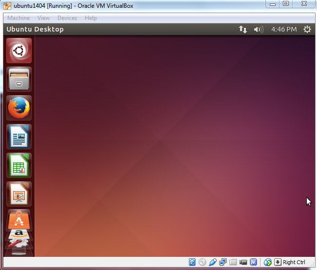

Oracle VirtualBox is a cross-platform
virtualization application.
It installs on your existing Intel or AMD-based computers, whether they are running Windows,
Mac, Linux or Solaris operating systems.
VirtualBox can create and run a "guest" operating system (virtual machine)
in a window of the host operating system.
The virtual machine provides a self-contained environment in which to
experiment with new software without risking damaging changes to the host operating system.
We will give an instruction with step-by-step screenshots to show how to install VirtualBox
with an example of installing Ubuntu OS as a guest machine. We also explain how to share files between the host and guest operating systems.
Downloads
Note the instruction here is based on the latest version of the VirtualBox. If you have already installed an
earlier version of VirtualBox, your experience may be different. It is recommended to use the latest version of VirtualBox
to avoid issues. The VirtualBox forum is a good place to find a solution if you see any problems.
Go to VirtualBox website here to download
the binary for your current operating system. Since our host machine is running on Windows, I'll choose 'x86/amd64'
from Windows hosts. When download is finished, run the executable file. Continue with the installation of VirtualBox
with the defaults. This will open VirtualBox at the end of the installation.

Create Virtual Machine
Click 'New' button to open a dialog.
Type a name for the new virtual machine. Since I am planning to install Ubuntu 14.04, I'll enter 'ubuntu1404'.
Note that VirtualBox automatically changes 'Type' to Linux and 'Version' to 'Ubuntu (64 bit)'. These two options are exactly what we need.
The memory size depends on your host machine memory size. In my case, I have 12GB physical RAM.
I like to allocate as much as possible for Ubuntu but leave some for my Windows host machine. I pick 8192 MB for my Ubuntu.
Note that VirtualBox will create a swap partition with the same amount space as base memeory you have entered here.
So later when you are selecting the size of the virtual hard drive, make sure it is large enough since the
hard drive will
be splitted into root (/)and swap partitions. The root partition contains by default all your system files, program settings and documents.

Accept the default 'Create a virtual hard drive now' and click 'Create' button.
Continue to accept the default 'VDI' drive file type and click 'Next' button.
Change the storage type from the default 'Dynamically allocated' to 'Fixed size' to increase performance.
For the virtual hard drive space, the default value is 8GB which is too little for RNA-Seq analysis.
I'll pick 100GB since I have plenty of space in my hard disk. You want to choose a good size for your RNA-Seq analysis.
If you realize the drive space is not large enough, you'll need to go over these steps again to create another virtual machine.
Click 'Create' button and VirtualBox will generate Ubuntu virtual machine.
Now the virtual machine is created. We are ready to install Ubuntu in this virtual machine.
Select your new virtual machine and click 'Settings' button. Click on 'Storage' category and then 'Empty' under Controller:IDE.
Click "CD/DVD" icon on right hand side and select the ubuntu ISO file to mount.
Note that if you have not downloaded 64-bit Ubuntu ISO file, you can check out this page for more information.
When downloading Ubuntu ISO file, make sure to selecte 64-bit version.
Also make sure the VT-x/Virtualization Technology has been enabled in your computer's
BIOS/Basic Input Output System.
Since Tophat program can take an advantage of multiple processors/threads, it is a good idea to specify a large
number of processors in virtual machine (default value is 1). You can change this number by clicking on 'System' category.
In this case, I change the number of CPUs to 4 since 4 is the largest value shown on the green bar in my case. Now you can click 'OK' button to continue.
VirtualBox may pop up a message about 'Auto capture keyboard' option.
Read the message there and check 'Do not show this message again' option before clicking OK.
Install Ubuntu
Back to Oracle VM VirtualBox Manager, click on the new Ubuntu virtual machine and hit 'Start' button.
Now you shall see a 'Welcome' screen. Click 'Install Ubuntu' button.
Note that the installation process may differ a little bit from version to version. The screenshots here are based on Ubuntu 14.04.1.
Click 'Continue' button.
Make sure 'Erase disk and install Ubuntu' option is selected and click 'Install Now' button.
Ubuntu will ask you a few questions. If the default is good, click 'Continue' button.
In 'Who are you?' dialog, enter your preferred name, username and password. Note that
this user will have root/sudo privilege. Click 'Continue' button.
The installation will continue until it is finished.
After installation is complete, click 'Restart Now' button. When you see a screen with a black background
saying 'Please remove installation media and close the tray (if any) then press ENTER:', just follow it.
Enter the password you have chosen and press 'Enter'.
The Ubuntu Desktop OS is ready. You may find the desktop screen is too small.
Don't worry. You can solve this easily with "VirtualBox Guest Additions".

More About VirtualBox
After the Ubuntu guest machine is installed, you will find the Ubuntu OS screen size is not extendable
and you are not able to share folders between the host machine and Ubuntu.
Guest Additions software provide additional capability to a guest virtual machine, including mouse pointer integration,
better video support, share folders, share clipboard, et al.
Before we proceed to install Guest Additions, make sure the current user has sudo/root privilege.
If the current user does not have sudo/root privilege or it is not sure, run the following terminal command from an account (such as the user
created when Ubuntu was first created; see the screenshot of 'Who are you?' above) with root privileges
to enable the root privilege for the current user
sudo adduser USERNAME sudo
where USERNAME should be replaced by the current user's name.
To install Guest Additions, click Devices > Insert Guest Additions CD images…
Click 'Run' button (next to 'Cancel' button) to start the installation. Note that the version of VBOXADDITIONS should be matched with
the one of VirtualBox you have installed.
Installing Guest Additions requires root privilege. Enter user's password (assume the current user has sudo privilege).
When the installation is finished, press Return key to close the terminal window.
Now prepare to restart the system to enable the change. Click 'Shutdown' on the menu and then the 'Restart' button.
After rebooting Ubuntu, you will see the desktop resolution is much better.
Before you can enable shared folders on the host machine, make sure you have installed VirtualBox Guest Additions
software on the guest machine.
When Ubuntu guest machine is on, click on Devices > Shared folders settings…
Select Machine Folders and hit the add button (plus sign).

Browse to the folder you wish to access from the guest machine. Check Auto-mount and
Make Permanent options and click OK button.
Click OK button once more.
Now type 'terminal' in Dash to open a Terminal.
Type the following line in the Terminal to add a user to 'vboxsf' group. This step is necessary in order to use the VB's 'Shared Folder' feature.
sudo adduser brb vboxsf
Replace 'brb' with your account name in Ubuntu.
When you are done, restart the Ubuntu guest machine and go to /media/ directory.
From Nautilus (file manager in Ubuntu), click Computer > File System > Media folder and inside it you will see a folder
beginning with sf_ (the folder name is sf_Downloads in our example).
Now you can transfer files between the Ubuntu guest machine and the Windows host machine in Nautilus.
Although Shared Folder system in VirtualBox is a nice feature, using VirtualBox shared folder directly for fastq data, annotation or output directory
can significantly reduce the performance compared to a native (Ubuntu) system or VirtualBox native system.
BDGE
After Ubuntu has been successfully installed on VirtualBox, users can be go back to
download and use
BDGE program.
{kind=link}
{kind=link}
{kind=link}
{kind=link}
{kind=link}
{kind=link}
{kind=link}
{kind=link}
{kind=link}
{kind=link}
{kind=link}
{kind=link}
{kind=link}
{kind=link}
{kind=link}
{kind=link}
{kind=link}
{kind=link}
{kind=link}
{kind=link}
{kind=link}
{kind=link}
{kind=link}
{kind=link}
{kind=link}
{kind=link}
{kind=link}
{kind=link}
{kind=link}
{kind=link}
{kind=link}
{kind=link}
{kind=link}